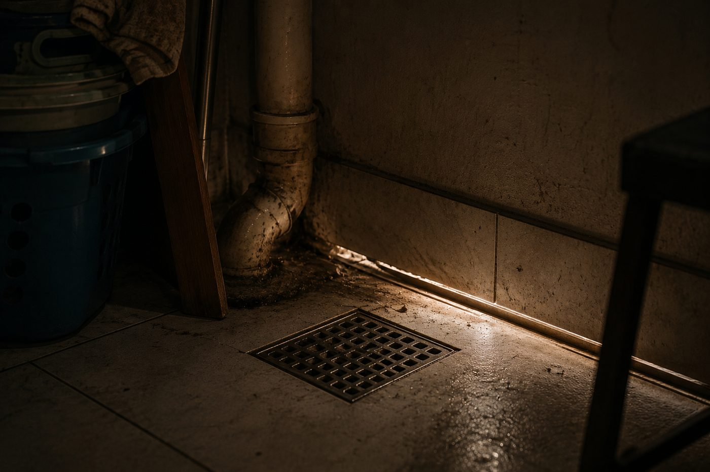

Escorpiões procuram locais com proteção, pouca luz, umidade e alimento. Por permanecerem escondidos grande parte do tempo, sua presença passa despercebida até um avistamento, uma captura ou um acidente. Conhecer os pontos mais prováveis é o primeiro passo para direcionar a inspeção e o monitoramento.

Onde procurar escorpiões dentro do imóvel?
Ralos e tubulações
Ralos de banheiros, cozinhas, lavanderias e áreas de serviço podem funcionar como pontos de entrada. Devem permanecer limpos, bem vedados e, quando possível, protegidos por telas ou sistemas de fechamento. O entorno do ralo também merece atenção, principalmente quando há frestas ou falhas no acabamento.
Rodapés, frestas e vãos
Rodapés soltos, rachaduras, espaços entre pisos e paredes e falhas próximas a portas e janelas oferecem áreas estreitas e protegidas. Esses pontos devem ser inspecionados e reparados sempre que necessário.
Áreas de serviço e lavanderias
Reúnem vários fatores favoráveis: tubulações, ralos, tanques, máquinas, umidade e objetos armazenados. Observe especialmente:
- atrás e embaixo de máquinas;
- sob tanques;
- junto aos rodapés e próximo a ralos;
- entre produtos e objetos armazenados;
- atrás de armários.
Armários sob pias, caixas de energia e móveis parados
Armários sob pias apresentam umidade, frestas nas tubulações e pouca movimentação. Caixas de fiação, conduítes e aberturas técnicas conectam diferentes partes da construção. Tampas danificadas devem ser corrigidas. Estantes, quadros, cortinas, caixas e móveis encostados na parede criam áreas protegidas: quanto mais difícil visualizar e limpar um local, maior a atenção na inspeção.
Escorpiões podem se esconder em calçados, roupas, toalhas e peças deixadas no piso. Sacuda e examine esses itens antes do uso, principalmente em locais com histórico de ocorrência.
Onde procurar nas áreas externas?
Entulhos e materiais de construção
Tijolos, telhas, blocos, madeiras, pedras e sobras de obra criam frestas e espaços protegidos. Quando precisarem ficar armazenados, mantenha-os organizados, afastados das paredes e, sempre que possível, elevados do solo. Use luvas adequadas e calçados fechados para movimentá-los.
Quintais, garagens e depósitos
Folhas secas, galhos, pedras, vasos e objetos abandonados servem de abrigo. Mantenha o ambiente limpo e a vegetação controlada. Garagens e depósitos reúnem caixas, ferramentas e materiais antigos: a organização deve permitir limpeza, inspeção visual e acesso a paredes e rodapés.
Caixas de gordura, muros e terrenos vizinhos
Tampas quebradas ou sem vedação precisam ser reparadas, pois conectam redes onde escorpiões e insetos encontram abrigo. Frestas em muros e terrenos com lixo ou vegetação descontrolada aumentam a circulação no entorno. A prevenção não deve considerar apenas o interior da construção, mas também as condições externas e os imóveis próximos.
Abrigo e passagem são a mesma coisa?
Não necessariamente. Um abrigo oferece condições para o escorpião permanecer escondido por um período. Uma rota de passagem é um caminho usado durante o deslocamento pelo ambiente. Paredes, rodapés, cantos e tubulações funcionam como rotas, por isso um ponto de monitoramento nem sempre precisa estar exatamente dentro do esconderijo. O objetivo pode ser interceptar o deslocamento entre o abrigo, a fonte de alimento e outras áreas do imóvel.
Quais pontos devem ser monitorados?
A escolha deve considerar:
- locais com avistamentos anteriores;
- pontos próximos a ralos e frestas;
- áreas pouco movimentadas;
- paredes e rodapés que conectam ambientes;
- depósitos e áreas técnicas;
- locais próximos a entulhos ou materiais acumulados;
- pontos onde já houve captura ou acidente.
Em operações profissionais, cada ponto pode receber uma identificação, como “LAV-01”, “GAR-02” ou “DEP-03”. O registro deve incluir a data de instalação, as inspeções realizadas, a quantidade capturada, a condição do refil e a necessidade de reposição.
Como instalar e monitorar com a NOPRAX
A armadilha deve permanecer encostada em paredes, rodapés, cantos ou superfícies que façam parte da rota provável de deslocamento. Evite instalar no centro de ambientes sem justificativa técnica. O dispositivo deve ficar estável, com as entradas livres e em local que permita inspeção periódica. Em ambientes com crianças ou animais domésticos, instale fora do alcance direto, mesmo com a superfície adesiva protegida dentro da estrutura.
Durante a inspeção, o responsável verifica:
- se houve captura;
- a condição do refil;
- a presença de sujeira ou umidade;
- se o dispositivo permanece bem posicionado;
- se o ponto deve ser mantido, alterado ou reforçado.
Quando o refil perde condição de uso, apenas o consumível é substituído, e a estrutura pode continuar instalada por múltiplos ciclos. Uma captura confirma que houve atividade naquele ponto durante o período monitorado. A ausência de captura, porém, não garante ausência de escorpiões no imóvel: o resultado deve ser analisado junto ao histórico, às condições ambientais e aos relatos de moradores.
Transforme áreas de risco em pontos monitorados
Conheça o dispositivo NOPRAX e veja como instalar um sistema reutilizável de captura passiva e monitoramento contínuo nos pontos críticos do imóvel.
Conhecer o dispositivo- Ministério da Saúde · Manual de Controle de Escorpiões
- Ministério da Saúde · Orientações de prevenção de acidentes
- Documentação técnica NOPRAX